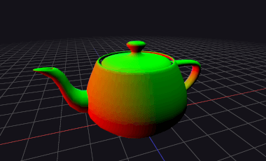
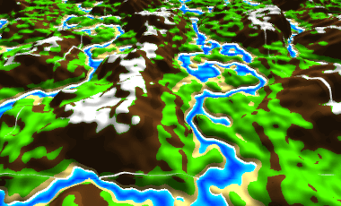
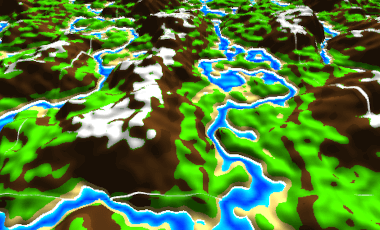
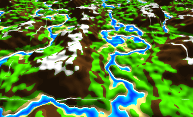

Imad's Website


articles
Raymarching explained interactively
Procedural terrain generation
Rotations with quaternions
Cross-platform window in C
projects
GLSL sandbox
Toy Raytracer
Game engine written in C
random stuff
Color picker
Japanese kana learning
Cool websites
contact
Email
Github
Shadertoy
Twitter
 
